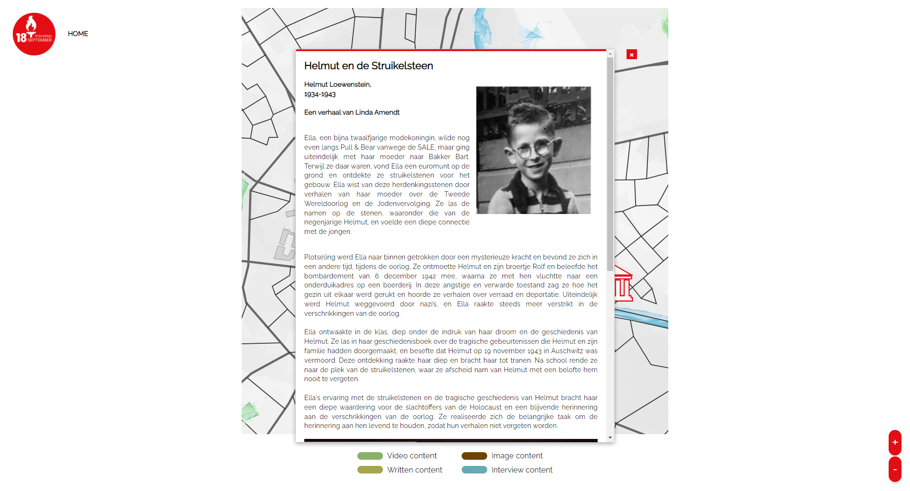

a dynamic map project for Stichting 18 September.

This project was built for Stichting 18 September and aimed to create an interactive, educational map of historical locations in Eindhoven. I was the main developer and focused on building the map from scratch using HTML, CSS, and JavaScript—no frameworks.
Key features include draggable navigation, smooth zooming based on screen size, and interactive markers that show historical info and Google Maps directions. The map was designed to work fluidly across devices, with a custom scaling system I implemented to avoid distortion or overflow.
On the UX side, we followed a full design process: low-fidelity sketches, individual mid-fidelity prototypes in Figma, then merging and testing high-fidelity versions through A/B testing. Feedback guided final design decisions to improve clarity and navigation.
This project challenged me technically—especially with merging different codebases and debugging conflicts in zoom behavior and pop-up styling. It taught me how to balance usability with performance and improved both my problem-solving and front-end development skills.